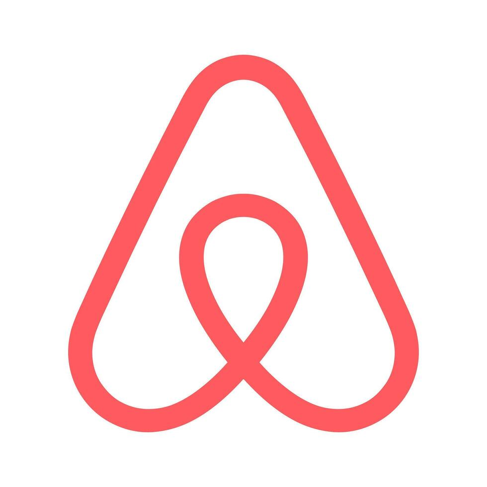
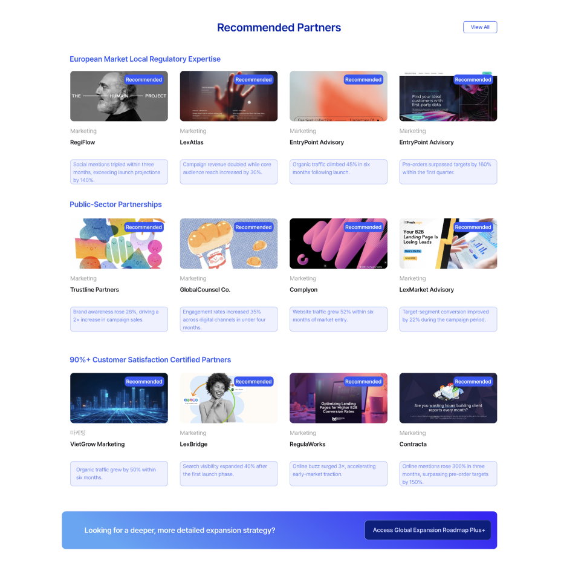
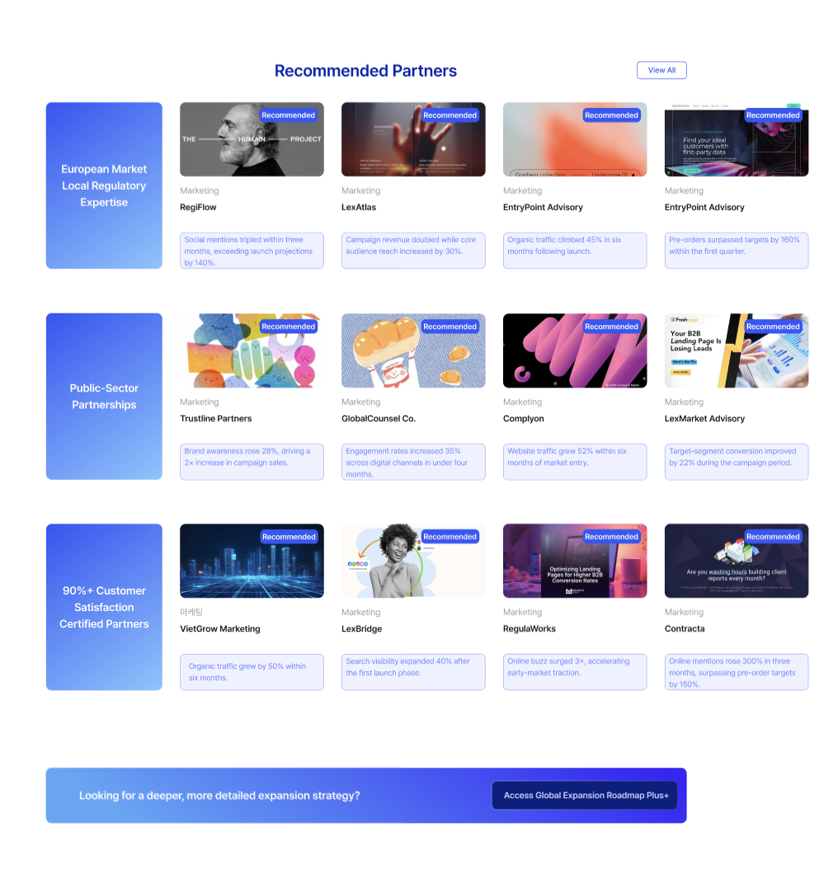

Connected workflow from discovery to collaboration
Weave is a B2B SaaS platform designed to support expanding overseas companies to discover the right local partners and connect and collaborate seamlessly.
Let's start with the context
Expanding overseas sounds like growth.
In reality, it's where well-resourced companies fail.
Even the biggest companies struggle when they enter unfamiliar markets without understanding local culture, regulations, or the right partners.

Airbnb · 2016–2022. Shut down its entire China business after 6 years. Lost to local competitors who understood the market.
Uber · 2013–2018. Sold its Southeast Asia operations to Grab after failing in 8 countries. Local knowledge outweighed global scale.

Walmart · 1997–2006. Lost over $1B in Germany after refusing to adapt to local culture. Ignored local advisors entirely.
The most common reasons companies fail to expand overseas
What we heard from users
"We spent three months just trying to find a marketing agency in Vietnam. Everyone we talked to was someone's friend of a friend. There was no way to actually compare options."
Marketing Director · Mid-size cosmetics brand
"Our partner in Thailand was handling our entire brand launch, but we had no visibility into what they were doing. By the time we realized the messaging was wrong for the local market, it was already live."
Head of Global Expansion · DTC skincare startup
"Every document we send to our local partner goes through email, gets translated on their end, and comes back with changes we can't track. We're basically working blind."
Operations Manager · Consumer electronics company
of business leaders struggle to identify and enter new markets.
of companies rank local regulations as their biggest barrier to expansion.
of companies struggle with language and cultural barriers overseas.
The Problem
Companies expanding overseas have no clear guidelines, no reliable information, and no structured way to find, evaluate, or work with local partners.
Word-of-mouth
Relies on personal networks. Limited options, no way to compare.
Government programs
Scattered across 15+ agencies. Hard to find, harder to navigate.
Expensive consultants
Reliable but priced for enterprises. Out of reach for most companies.
Core Insight
These failures share one root cause:
Finding reliable local partners is a broken process
Before
Scattered information, uncertain execution
Researching country regulations separately
Missing regulatory changes → delays
Manually verifying partner reliability
Hard to share progress
Contracts/docs spread across email and files
After
Global expansion managed as one flow
Customized roadmap by country and industry
Real-time alerts to minimize risk
Verified local experts and partner matching
Full progress visibility in one dashboard
Contracts, documents, and history managed in one workspace
How might we create a trustworthy space where companies can confidently find reliable partners and manage expansion from start to finish?
Solution
Create a space where expanding companies can trust the information and feel confident in every decision.
To make overseas expansion feel manageable instead of overwhelming, we replaced guesswork with evidence at every decision point. Two design principles made this work:
Principle 01
Data-forward decisions
- •Surface relevant partners based on company profile and target market
- •Provide verifiable performance data so companies can compare with confidence
Why: Research showed every existing method (word-of-mouth, government programs, consultants) failed because users couldn't compare or verify. The marketplace had to make evaluation feel like data analysis, not a leap of faith.
Principle 02
Unified workspace, full visibility
- •Give both sides one trusted space for every decision and communication
- •Use AI to assist document review, translation, and quality control across borders
Why: Users reported "working blind". documents went through email, got translated elsewhere, came back with untrackable changes. Every handoff between tools was where information got lost.
Core Flow
From discovery to daily collaboration. one connected platform
Browse the marketplace, evaluate a partner, move to engagement, and collaborate in a shared workspace. without leaving Weave.
01 Discovery to Connection
From onboarding to first contract. without leaving the platform
Users set up their company profile, browse AI-matched partners, generate a tailored expansion roadmap, and move to proposal and contracting. Every step builds on data from the previous one.
Onboarding
Set up company profile, define target markets, set industry preferences. creating the foundation for AI-driven recommendations.
Marketplace
Browse AI-matched partners, compare with verified performance data, view social proof and client reviews.
Roadmap
AI-generated step-by-step expansion plan connecting market analysis directly to partner discovery.
Contracting
Generate proposals, request quotes, and draft contracts within the same workflow. reducing handoffs.
02 Workspace & Data Management
All the context, already connected
Because discovery, evaluation, and contracting all happen in Weave, the workspace already knows the context. No ramp-up, no importing. insights are ready from day one.
03 AI-Integrated Document Workflow
Auto-complete, localize, and translate before delivery
AI fills in missing content, flags culturally inappropriate expressions with local alternatives, and translates the full document. ready to deliver. The order matters: complete first, then adapt for culture, then translate.
Research
Every design decision traces back to what we heard
We synthesized our research into four core themes. Each one directly shaped a feature in the platform.
Discovery is broken
"We spent three months just trying to find a marketing agency in Vietnam. Everyone we talked to was someone's friend of a friend. There was no way to actually compare options."
Marketing Director · Mid-size cosmetics brand
Data-driven marketplace with filterable, comparable partner profiles and AI-driven matching based on company profile and target market.
No visibility into partner work
"Our partner in Thailand was handling our entire brand launch, but we had no visibility into what they were doing. By the time we realized the messaging was wrong for the local market, it was already live."
Head of Global Expansion · DTC skincare startup
Shared workspace dashboard with real-time project status, document tracking, and full collaboration history between HQ and partners.
Document chaos across borders
"Every document we send to our local partner goes through email, gets translated on their end, and comes back with changes we can't track. We're basically working blind."
Operations Manager · Consumer electronics company
In-platform document workflow with structured extraction, version history, and AI-assisted review. keeping everything traceable in one place.
Cultural mismatch goes undetected
"By the time we realized the messaging was wrong for the local market, it was already live. We had no way to catch it beforehand."
Head of Global Expansion · DTC skincare startup
AI localization review that flags culturally inappropriate expressions, non-standard phrasing, and regulatory differences. with suggested local alternatives before delivery.
Design Process
How we got from research to a working prototype
The challenge wasn't just building features. it was designing a system that connects three completely different activities (discovery, engagement, collaboration) into one coherent experience. Here's how we approached it.
User Flow
Our research revealed that overseas expansion isn't one task. it's three distinct phases that companies currently handle with disconnected tools. We needed to map out how a user would move through all three without losing context between them.
The critical design question was: where does one phase end and the next begin? We found that the transition points. from evaluating a partner to contracting, from contracting to collaborating. were exactly where existing workflows broke down. So those handoff moments became the focus of the flow design.
Discovery
↓
↓
+
Engagement
↓
↓
Collaboration
+
↓
↓
User Personas
Early in our research, we noticed that not all users need the same entry point. A mid-size enterprise with an overseas team has completely different pain points than a startup founder doing everything alone. If we designed for only one type, the others would feel lost.
We built three personas to represent these distinct needs. and critically, each persona maps to a different core feature of the platform. This mapping ensured every major feature had a clear user it was serving, and prevented us from building features that sounded useful but didn't solve anyone's specific problem.

Grace, 35
Overseas Business Manager
Mid-size Enterprise
Managing 3 Southeast Asian markets simultaneously with email/Excel-based collaboration. Approval delays cause missed market timing; partner materials arrive untracked and unverified.
Needs: Approval workflow automation, partner activity history, regulatory update alerts, one-platform management.
→ Maps to: Workspace features

Daniel, 43
CEO
SME Manufacturing
First overseas expansion with no dedicated team. Information scattered across trade fairs and government sites; can't verify which distributors or logistics partners are reliable.
Needs: Verified partner connections, standardized contract templates, step-by-step expansion roadmap.
→ Maps to: Marketplace features

Sophie, 32
Startup Founder
D2C Health Brand
Successful domestic brand expanding to North America. No overseas experience. regulations change fast, government resources are too generic, and limited team size means every misstep is costly.
Needs: Big-picture expansion guide, regulatory change tracking, resource-efficient process management.
→ Maps to: Roadmap features
Concept Model
Before jumping into screens, we needed to define the system's conceptual structure. what are the core objects (companies, partners, documents, projects), how do they relate, and what actions connect them?
This was especially important for Weave because the platform bridges two sides (HQ and local partners) who interact with the same data differently. The concept model helped us catch structural problems early. for example, we realized that a "document" in the workspace needed to carry metadata about which partner it was shared with, what extraction conditions were applied, and what AI processing stage it was in. Without this model, those relationships would have been afterthoughts bolted onto the UI.

Wireframes
With the flow, personas, and concept model established, we moved to wireframing. The focus here was on layout decisions and information hierarchy. particularly for the workspace dashboard and AI document editor, which had the most complex information density. We iterated on wireframes before going to high-fidelity, which saved significant time when the user testing feedback came in later.

Design Decisions
Why we built it this way
Why a marketplace, not a directory?
Discovery fails because users can't compare or verify. a directory just lists names without context
A marketplace structure enables social proof, performance metrics, and AI-driven matching that a static list can't support
Users need to feel like they're making a data-driven decision, not taking a leap of faith
We built a marketplace with performance metrics, client reviews, and AI matching. so companies can compare with confidence, not just browse.
Why a shared workspace instead of separate tools?
Every tool handoff is where information gets lost. users described "working blind" when switching between email, Excel, and messaging
Partners and HQ need shared context, not forwarded emails with attachments that diverge over time
Because discovery and contracting happen in-platform, the workspace inherits all prior context automatically
One platform where both sides see the same data, documents, and timeline. no ramp-up, no re-entering information.
Why does AI assist rather than automate?
Cross-border business documents carry legal and cultural stakes too high for full automation
Users need to review, not just trust. "Clean Girl" doesn't translate the same way in Korea; "Board-certified" doesn't carry the same weight
Preserving human judgment builds trust in the AI features over time, rather than forcing reliance from day one
AI suggests, flags, and drafts. but humans review and approve every step. The system supports decisions without making them.
Why Complete → Localize → Translate in that order?
You can't localize incomplete content. cultural adaptation requires the full picture first
You can't translate before localizing. you'd translate culturally inappropriate expressions into another language
Reversing any step means redoing work. the sequence emerged from understanding how document preparation actually flows
A sequential pipeline where each step builds on the last: Auto-Complete fills gaps, Localization adapts for culture, Translation converts for the partner's language.
User Testing
Testing with real users
3 participants tested via remote sessions on Google Meet + Figma prototype.
2 task flows tested. Workspace Dashboard + AI Document Workflow.
Finding 01. Information Overload
All three participants struggled with text density and unclear visual hierarchy.
"I couldn't tell where to look first. Everything had the same visual weight. I had to read every line to figure out what was different."
Emily
"There's too much information at once. The unfamiliar terms made it even harder to process."
Sarah
"The amount of text made it hard to stay focused. It all blends together."
Rachel
Insight
Users don't need less information. they need clearer visual hierarchy and progressive disclosure. The priority isn't reducing content, but structuring it so users can scan, identify what matters, and dive deeper only when needed.
Finding 02. AI Button Usability
AI buttons at the bottom of the editor forced constant scrolling and hid the workflow sequence.
"I keep scrolling down to press a button, then back up to see the result, then down again for the next step. It's exhausting."
Sarah
"The editing process feels like it has a sequence, but I couldn't tell which button to press first just by looking at them."
Emily
"If no one explained it to me, I wouldn't have known what these buttons do. You'd have to just try them to find out."
Rachel
Insight
The AI tools need to be visible without scrolling and communicate their sequence. Users should understand the workflow order (Auto-Complete → Localization → Translation) at a glance, not through trial and error.
Iteration
What we changed after testing
Iteration 01. Information Overload
Restructured visual hierarchy with progressive disclosure. letting users scan first and dive deeper only when needed.
Before

After

Iteration 02. AI Button Usability
Repositioned AI tools to be always visible with clear sequential labeling. users can now see the full workflow order at a glance.
Before

After

Reflection
What I learned from this project
Lesson 01
AI should remove friction, not add features
The strongest AI features in Weave. auto-complete, localization review, translation. all solve the same type of problem: tasks that are tedious and error-prone because of volume and language barriers, not because they're conceptually hard. Every time we considered adding an AI feature, we asked: "Is this removing a real pain point, or just adding novelty?"
Lesson 02
Show the sequence, not just the tools
User testing revealed that having the right AI tools isn't enough. users need to understand the order. When buttons were presented without clear sequencing, participants didn't know what to press first. Workflow design is as much about communicating the path as building the features along it.
Lesson 03
Design for the user who doesn't know what they need
First-time expanders don't know what type of partner to search for, what regulations apply, or how to structure a cross-border proposal. The discovery experience had to guide without assuming expertise. which led us to AI-recommended partners over pure search, and structured document workflows over blank editors.
Lesson 04
Cultural intelligence can't be an afterthought
The localization review feature exists because we learned that direct translation isn't enough. "Clean Girl" doesn't mean the same thing in Korea. "Board-certified dermatologist" doesn't carry the same weight. Designing for cross-border collaboration means building cultural awareness into the product itself.
What I'd explore next
Test with real expansion data. validate partner matching accuracy and trust signal effectiveness with actual companies going through overseas expansion.
Expand localization review. train the AI on more market-specific cultural patterns beyond US-Korea, and measure how localization corrections reduce partner revision cycles.
Measure the AI workflow impact. compare document review time, error rates, and partner satisfaction between the AI-assisted workflow and traditional email-based processes.